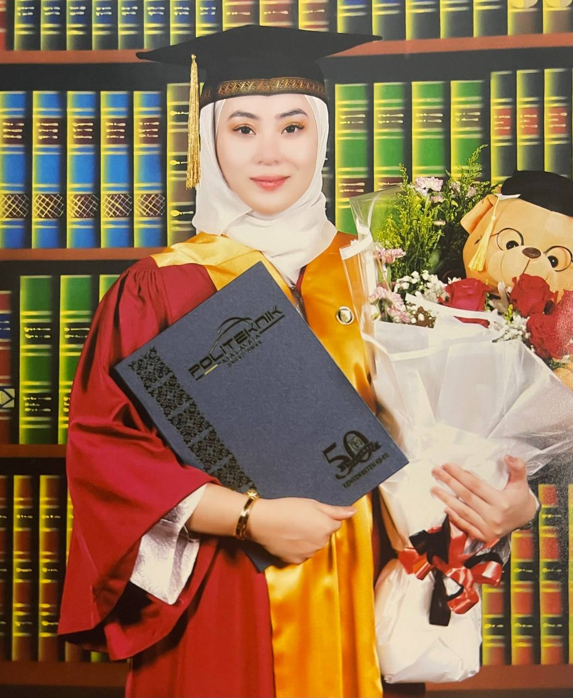
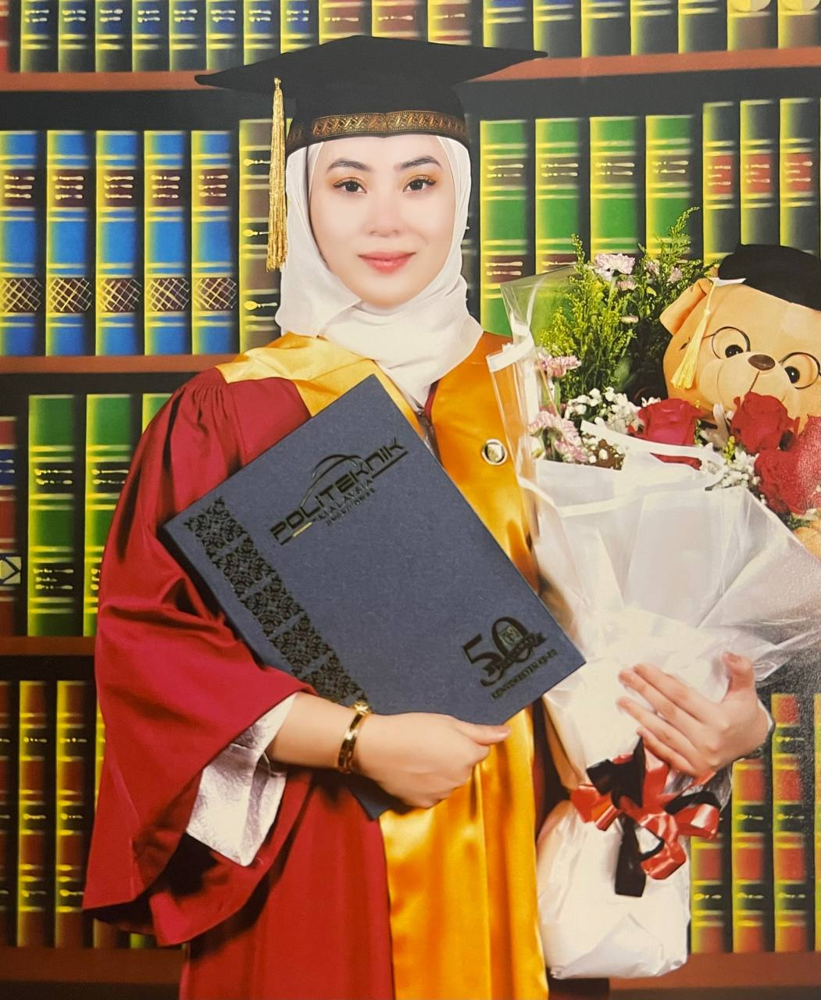

Name: Nurul Diyana Iwani Bt Azlan Age: 23 I/C No.: 000417-02-**** Date of Birth: 17 April 2000 Gender: Female Religion: Islam Race: Malay Status: Single Nationality: Malaysia Address: Lot 3281, Jalan Kota Jelasin,15100, Kota Bharu, Kelantan Phone No.: +6012-9831704 E-Mail Address: diyana0024@gmail.com |